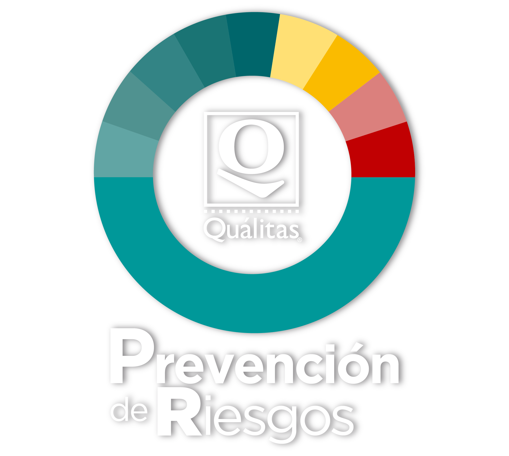

Acceso al Prediagnóstico
Ingresar
Registrar Nuevo Usuario
×
Nuevo Registro
Crear Usuario
Quálitas Compañía de Seguros
Prevención de Riesgos
Diagnóstico para la prevención de robos
🕒 Cuestionarios Pendientes (En Proceso)
Cargando...
✅ Cuestionarios Completados (Historial)
Cargando...
Secciones
PUNTUACIÓN GENERAL
0.0 / 100
Nivel de Riesgo General
Instrucciones:
Use el panel de la izquierda para navegar o expanda cada sección. Su progreso se guardará automáticamente en el panel.
Sección 1: Antecedentes de la empresa
Nombre de la empresa o razón social
Fecha de entrevista
Descripción breve de la empresa
Indique su número de póliza
¿Cuentan con alguna certificación?
¿Cuáles son tus principales clientes?
¿Qué tipo de mercancía movilizan? (Seleccione una o más)
¿Cuáles fueron los riesgos identificados en los últimos 2 eventos de robos consumados, tanto de vehículo como de mercancía?
¿Qué oportunidades, en materia de prevención, identifica la empresa para mitigar los eventos de robo y aumentar la probabilidad de recuperación?
Sección 2: Datos de la organización y Siniestralidad
Estados donde tiene servicio la empresa (Cobertura)
1. ¿Cuáles son sus rutas más frecuentes? (Tramo carretero)
2. ¿Cuántos viajes realizas diariamente por cada una de las rutas mencionadas? (diario)
3. ¿Qué tipo de mercancía movilizas en esas rutas?
4. ¿Los últimos eventos de robo fueron en detención o con violencia (en movimiento?)
5. En qué sitios fueron los últimos eventos de robo, por ejemplo: Bar, Restaurante, Estación de Policía, Estación de Servicio, Cachimba, Huachicolera, Centro de Distribución, Intersección, Tienda de conveniencia, Caseta de Cobro, Zona de prostitución, Pensión.
Seleccione el Estado del corporativo o matriz
-- Seleccione un Estado --
Seleccione el Municipio del corporativo o matriz
-- Seleccione un Municipio --
Ubicaciones adicionales
Sucursal
Estado
-- Estado --
Municipio
-- Municipio --
Agregar
Análisis de Siniestralidad (Datos para Informe)
Fecha de consulta de Siniestralidad
Frecuencia Anualizada Actual (%)
El reporte indicará si excede el estándar deseable del 24%.
Valor de Severidad ($)
Se usará en: "En cuanto a la severidad el análisis indica un valor de..."
Desglose de Siniestros
Tipo de Siniestro
Número
Monto ($)
+
Agregar Fila de Siniestro
💬 Comentarios Finales
👍 Generar Informe y Finalizar
💾